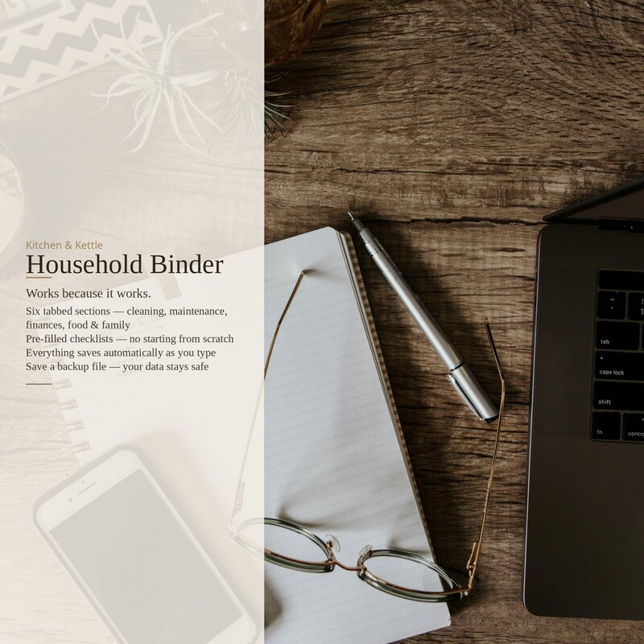

Last winter the power went out at our house for fourteen hours. Not dramatic — no frozen pipes, no spoiled food — but long enough to notice something embarrassing: I didn't know my own utility account number. It was in an email. My email was on a server. The server was somewhere I couldn't reach because the internet was down.
This is not a story about preparedness as a hobby. I am not telling you to buy a generator or stockpile canned goods. I am telling you to write down your gas company account number on a piece of paper and put it somewhere you can find it in the dark. That's the whole idea. Paper doesn't need a password.
What belongs on paper
There's a category of household information that apps handle badly — not because the apps are bad, but because the moments you need this information are the same moments apps fail. You need the plumber's number when water is coming through the ceiling. You need the insurance policy number when you're standing in a parking lot looking at a damaged car. You need your kid's allergist on a Saturday morning when the pediatrician's office is closed and you can't remember whether it was a peanut allergy or a tree nut allergy.
Here's what should live on paper in your house, organized into sections that make sense when you're stressed:
Emergency contacts
Not just 911. Your electrician. Your plumber. The number for poison control. The non-emergency police line. Your vet's after-hours number. The neighbor who has a key. If you have kids, the pediatrician, the school nurse, and the one relative who's authorized to pick them up from daycare. Write down the relationship, not just the name — "Aunt Maria (authorized pickup)" is better than "Maria" when someone else is reading your list.
Utility accounts
Every account number for every service connected to your house: electric, gas, water, internet, trash pickup, septic service if you have it. The company name, the account number, and the phone number you call when something goes wrong — not the sales line. When the power company asks for your account number and you're digging through twelve months of emails on a phone with eight percent battery, you will understand why this matters.
Passwords and access
I am not suggesting you write down every password. But someone in your house needs to know how to get into the wifi router settings, the thermostat app, and the shared family calendar. Password hints are better than passwords — enough to jog memory for someone who already knows, not enough to be useful to a stranger. "The one with the dog's name plus the year we moved" is a good hint. The actual password is not.
Pet information
If something happened to you tomorrow, would the person taking care of your dog know which vet to call? Would they know about the chicken allergy, or that the cat gets a pill every other day, or that the microchip company is different from the vet? Write it down. Feeding instructions, medication schedule, microchip number, and the name of the one friend who said they'd take the animals if anything ever happened.
Household reference numbers
The paint color in the living room. The furnace filter size. The model number of the refrigerator — not for the manual, but so you can order the right water filter without pulling the fridge away from the wall. When you last changed the smoke detector batteries. These are things you look up once a year, never remember, and always wish you'd written down.
Why paper, specifically
Phones die. Apps log you out. Cloud services go down, get acquired, or change their terms. A binder on a shelf still works when the power is out, when the wifi is down, when you've been locked out of your account for entering the wrong password three times, or when someone else is running your house because you're in a hospital bed or on a plane. It's a fallback. The phone is plan A. The binder is plan B. You only need plan B when plan A has already failed, which is exactly when you don't want to be building a system from scratch.
What's in the full binder
The Household Binder covers six sections: home information and emergency contacts, cleaning schedules (daily through seasonal deep-clean), home maintenance (seasonal checklist, appliance log, warranty tracker, paint colors), financial organization (bill tracker, subscriptions, budget, savings goals), food and kitchen (pantry inventory, freezer inventory, meal planner, grocery list), and family organization (important dates, gift planning, holiday and vacation planning). Everything has clickable checkboxes and fillable fields that save to your device. Print a clean copy anytime.
The Household Binder puts all of this in one place — 38 fillable pages with interactive checkboxes, toolbar backup and restore, and pre-filled checklists so you're never starting from scratch. Six tabbed sections, printable, no special software needed.
Household Binder on Etsy →